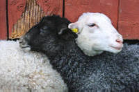

Managing learners and learning

You may not think of yourself as a manager but management is a key teaching skill. It comes with practice and experience but here are some guidelines concerning what you should be thinking about when it comes to your classroom behaviour.
Take your time with this section because you will be asked to follow three other initial training guides in the relevant areas.
Relationships, rapport and control
|  |
 |
A friend or a prison guard? |
Neither.
The mistake lots of novice teachers make, especially when they are teaching children or young adults, is to veer too much to one end or the other of the cline from chum to dictator. There are three issues:
- You need to keep some professional distance but still engender a trusting and open relationship.
- The atmosphere should be serious but not earnest.
- The classroom should be a place where learners are comfortable taking risks.
 |
 |
Task 1:
How can you try to ensure that these three things happen? Think for a little while, make a few notes in each area and then click here. |
- Keeping your distance but remaining approachable:
- Wear clothes which are appropriate in the culture in which you are operating.
- Use and require appropriate forms of address.
In most classes for adults first-name addresses are invariably used.
Children do not usually respond well to the use of first names (it confuses them) and teenagers get bewildered if their teachers vary too much.
If your younger learners use your surname and you use their first names, you have already established a measure of control. - Set some rules.
In classes for adults, interruption and contribution is generally acceptable because adults (most of them) have learned when it is appropriate to interrupt and ask for clarification or information and when it isn't.
Many children and teenagers have a shaky grasp of the rules so you need to set them out.
An effective way to do this is to devote a lesson at the beginning to writing out a kind of classroom conduct contract covering issues like listening, interrupting, being respectful, using mobile phones, eating, drinking and so on.
- Getting the atmosphere right:
- Your demeanour will often set the tone. If you remain serious, well organised and friendly, that will help a lot.
- Don't be boring. Make sure you inject a little humour into what you say and present. There is no reason why a text has to be earnest or a presentation dull. Getting a joke in a foreign language is very satisfying, by the way.
- Value people's contributions by thanking them or following them up.
- Respond to what your learners say as well as how they say it.
- Taking risks willingly:
- Correct gently.
- Never, ever, be amused by learners' mistakes.
- Be intolerant of racism and prejudice in the class.
- Don't cover written work with red ink.
- Think carefully about whether you need to correct (see the section on handling error for more).
Classroom layout
How the classroom is set out is probably more important than you imagine. There are lots of variables and levels of flexibility.
|
|
|
Task 2: Here are three layouts for you to consider. Think about the advantages and disadvantages and then follow the initial guide to classroom organisation. The guide opens in an new tab so shut it when you have finished to come back to this page. |
 |
 |
|
| Horseshoe | Islands | Rows |
Grouping learners
How you are able to group your learners will often depend on the way the classroom is laid out. There are lots of alternatives.
|
|
|
Task 3: Here are some sorts of grouping to consider. Think about what the learners might be doing in these cases and then follow the initial guide to grouping. The guide opens in an new tab so shut it when you have finished to come back to this page. |
 |
 |
 |
 |
Student-centred lessons |
The more a lesson is focused on the learners, the more they will contribute and the less work you will have to do. A good deal of this is to do with how you give and how you get feedback.
There are two sorts of tasks:
- A task which is focused on the language or skill to make sure that it has been learned.
- A task which is focused on getting students to express their ideas and think about a topic.
|
|
|
Task 4: For which of these task types is clear feedback to and from the learners absolutely necessary? Think about that for a moment and then follow the initial guide managing feedback. The guide opens in an new tab so shut it when you have finished to come back to this page. |
Once you have understood the essentials of how to give and get feedback, you can go on to learn about handling error.